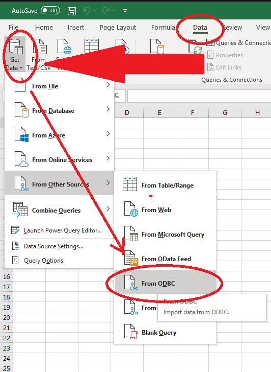
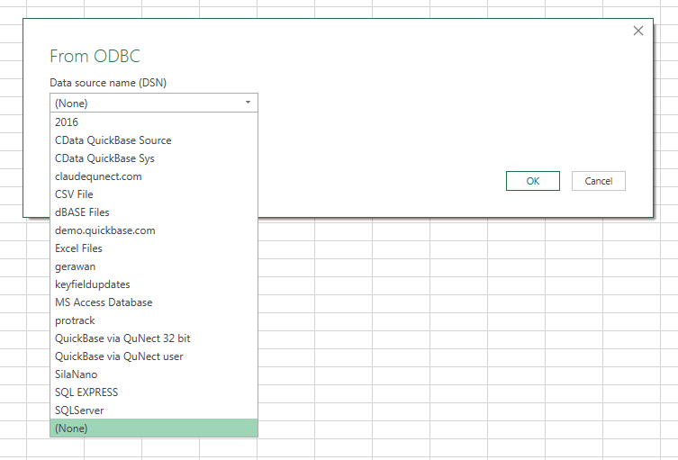
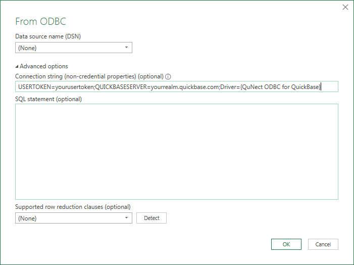

Application Note for QuNect ODBC for QuickBase
Excel 365 without DSN or Password
To create an Excel 365 spreadsheet you can share with others without sharing your password or requiring them to configure a DSN please follow these steps.
Make sure you have QuNect ODBC 2021 (32 and 64 bit) for QuickBase or later installed on your MS Windows machine. Also anyone you share your spreadsheet with needs to have the same version of QuNect ODBC for QuickBase installed on their machine. They do not need a license as they will be sharing your license.
Connect to an ODBC data source as indicated below. 
Choose the last entry in the list of DSNs which is the "None" choice. 
Then open up the "Advanced options" and enter the following into the "Connection string" text box:
USERTOKEN=yourusertoken;QUICKBASESERVER=yourrealm.quickbase.com;Driver={QuNect ODBC for QuickBase}
make sure to substitute your usertoken and Quickbase realm name. 
On subsequent dialogs you will be prompted for your username. You must enter the username associated with the usertoken you placed in the connection string. However when prompted for a password you can leave the password text entry box blank.